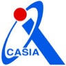

Welcome to my homepage!
I’m a software engineer at AWS Kiro IDE
 .
.
Alongside product engineering, I contribute to medical imaging and AI agent research at the University of Colorado Anschutz School of Medicine.
My research aims to transform the healthcare experience with AI—improving hospital triage efficiency and building trustworthy, parameter-efficient AI systems for clinical decision support. Recently, I have been exploring EHR-Based Patient World Models and Loop World Models, and developing reliable Medical Agent Systems along with large-scale data processing infrastructure for training medical world models (ehr2trace).
At CU Anschutz, I’m advised by Prof. Harrison Bai and Prof. Yuli Wang. At Brown, I was advised by Prof. Zhicheng Jiao. At the University of Science and Technology Beijing, I was advised by Prof. Cheng Chen and Prof. Ruoxiu Xiao. Earlier, at the Chinese Academy of Sciences, Institute of Automation

, I built a real-time ICU patient monitoring system advised by Prof. Hongjun Yang and Prof. Zengguang Hou.Research interests: Multimodal LLMs · Medical Image Analysis · AI in Healthcare · Agentic AI
Highlights:
- Evolving LLM context and memory systems (compaction, retrieval, context scheduling under token budgets), reducing inference cost and latency while preserving response quality.
- As an intern, designed and shipped Kiro IDE's core distributed context compaction system—hierarchical compression, achieving 80–90% compression—and drove its production launch serving 100K+ users.
- Contributor to KiroCrew, an open-source multi-agent workspace built on kiro-cli and the Agent Client Protocol (ACP): session-resilience, redaction, and sandboxing improvements.
- Research on reliable AI for medical imaging: reliability stress tests and decision-time routing for chest X-ray vision–language models (CHASE 2026) and confidence-gated cloud–edge cascade triage (Smart Health, 2026), plus a U.S. provisional patent on an intelligent radiology reporting platform.
- Earlier, built a real-time ICU patient monitoring system at the Chinese Academy of Sciences, Institute of Automation, securing a software patent and a national grant.
Feel free to reach out if you’d like to chat about AI products, developer tools, or healthcare AI!
News
- 2026.07: 🚀 I join AWS Kiro as a full-time Software Development Engineer in Seattle!
- 2026.07: 🔬 I start as a Research Assistant at the University of Colorado Anschutz School of Medicine.
- 2026: 🎉 Our paper on reliability stress tests and decision-time routing for chest X-ray VLMs appears at IEEE/ACM CHASE 2026 and is selected as an Oral presentation 🏅!
- 2026: 🎉 Our paper on confidence-gated cloud–edge cascade triage for medical imaging is published in Smart Health and is selected as an Oral presentation 🏅!
- 2026.05: 🎓 I obtain my Master’s degree in Computer Science from Brown University!
- 2025.07: 📄 Our unified platform for radiology report generation and clinician-centered AI evaluation is released on medRxiv.
- 2025.06: 💻 I join AWS Kiro as a Software Engineer Intern, working on context management for agentic coding.
- 2025.03: 🏥 I join Brown University Health as a Research Intern on AI-powered medical imaging.
- 2024.09: 🎓 I join Brown University as a Master’s student in Computer Science!
- 2024.07: 🏅 I graduate from University of Science and Technology Beijing with the Dean’s Medal of the School of Artificial Intelligence.
Publications
For a complete list of publications, please visit my Google Scholar.
Citations: 47 · h-index: 2 · i10-index: 1 · Updated September 2026
Reliability Stress Tests and Decision-Time Routing for Chest X-ray Vision-Language Models
2026 IEEE/ACM Conference on Connected Health: Applications, Systems and Technologies, 2026
Confidence-gated cloud-edge cascade triage via variational risk minimization for medical imaging
Smart Health · 100689, 2026
A Unified Platform for Radiology Report Generation and Clinician-Centered AI Evaluation
medRxiv · 2025.07.07.25331018, 2025 · cited by 1
Meta-Radiology · 100199, 2025
Understanding the brain with attention: A survey of transformers in brain sciences
Brain-X · 1(3), e29, 2023 · cited by 44
Optimization of CNN for Diagnosis on Lung Disease by Lung Segmentation and Rib Suppression
15th International Symposium on Computational Intelligence and Design, 2022 · cited by 2
Experience
- 2026.07 – Present, Software Development Engineer, Amazon Web Services · Kiro

 , Seattle, WA. Details
, Seattle, WA. Details - 2026.07 – Present, Research Assistant, University of Colorado Anschutz School of Medicine, Remote. Advised by Prof. Harrison Bai and Prof. Yuli Wang. Details
- 2025.06 – 2025.08, Software Engineer Intern, Amazon Web Services · Kiro, Seattle, WA. Details
- 2025.03 – 2025.08, Research Intern, Brown University Health, Providence, RI. Details
- 2024.09 – 2025.08, Personal Trainer, Brown University Athletics. Details
- 2024.12 – 2025.02, Lead Web Developer & Designer, Rhode Island Coalition for Israel. Details
- 2024.05 – 2024.08, Algorithm Engineering Intern, Shukun Technology. Details
- 2023.05 – 2024.05, Software & ML Engineer Intern, Chinese Academy of Sciences, Institute of Automation. Advised by Prof. Hongjun Yang and Prof. Zengguang Hou. Details
- 2023.05 – 2023.08, Research Intern, University of Science and Technology Beijing. Details
- 2022.07 – 2022.09, Research Intern, Nanyang Technological University. Details
Education
- 2024.09 – 2026.05, Master of Science in Computer Science, Brown University, Providence, RI, USA. Advised by Prof. Zhicheng Jiao. Details
- 2020.09 – 2024.07, Bachelor of Engineering in Artificial Intelligence, University of Science and Technology Beijing, Beijing, China. Graduated with honors, GPA 3.83/4.0. Details
Honors and Awards
- Patents: U.S. provisional patent on an intelligent radiology reporting platform; software patent for a real-time ICU patient monitoring system (Chinese Academy of Sciences, Institute of Automation).
- 2024: Dean’s Medal, School of Artificial Intelligence, University of Science and Technology Beijing.
Skills
- Languages: TypeScript · JavaScript · Python · Java · C/C++ · SQL · Go
- AI & Data: LLM Systems · RAG · MCP · PyTorch · TensorFlow · Computer Vision
- Frameworks: React · Node.js · Flask · Spring Boot · MySQL
- Tools: AWS · Docker · Git · Google Cloud · Vite · Figma
Services
- Journal Reviewer: IEEE Internet of Things Journal · IEEE Transactions on Biomedical Engineering · Quantitative Imaging in Medicine and Surgery
- Volunteer: CHASE 2026